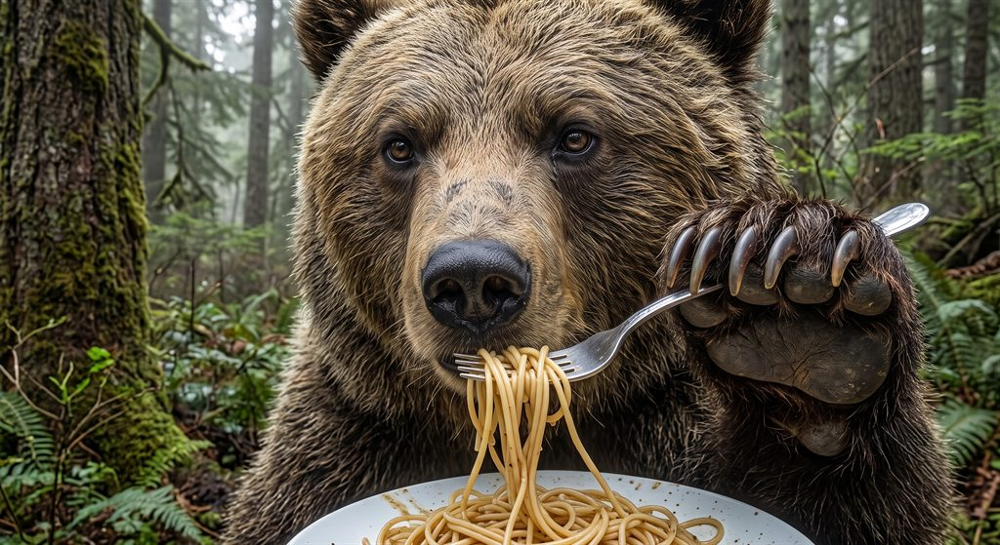

Feed The BearTerms of Service
Effective November 4, 2026
These terms are an agreement between you and NyxCollective LLC ("we", "us"), the maker of the Feed The Bear app and website (the "Service"). By using the Service you agree to them. If you don't agree, please don't use the Service. Questions: support@feed-the-bear.com.
The short version
- Your food diary is yours. We only use it to run the app for you, as our Privacy Policy explains.
- Grizzly is a subscription that renews automatically until you cancel. You can cancel any time in the app.
- Ratings, hours, photos and AI suggestions come from other services and can be wrong. Check before you go.
- Be decent: don't post things you don't have the right to share, and don't misuse the Service.
Who can use it
You must be at least 13 years old to use the Service. If you're under the age of majority where you live, you need a parent or guardian's permission. You're responsible for keeping your account sign-in safe and for activity on your account.
Your content
You keep ownership of what you add, such as spots, ratings, notes, photos and videos ("your content"). You give us permission to store, copy and display your content only as needed to run the Service for you, for example to back it up, sync it across your devices, and show it to people you choose to share it with. This permission ends when you delete the content or your account, except for copies other people already received through a share you made.
Only add content you have the right to share. Don't post anything illegal, hateful, harassing, sexually explicit, or that invades someone's privacy. We may remove content or suspend accounts that break these rules.
Grizzly subscription
- Billing: Grizzly is billed monthly or yearly, at the price shown before you confirm. Payments are processed by Stripe. Prices may include or exclude tax depending on where you live.
- Automatic renewal: your subscription renews at the end of each period, and you're charged the then-current price, until you cancel. We'll tell you in advance if the price of your plan changes, and the new price applies from your next renewal.
- Free trials: if your plan starts with a free trial, you won't be charged until the trial ends. If you don't cancel before then, the subscription starts and you're charged. We email a reminder before a trial ends.
- Cancelling: open the app and go to My Account → Manage subscription. When you cancel, Grizzly stays on until the end of the period you've paid for, and you won't be charged again. Deleting your account also cancels your subscription.
- Refunds: payments are generally non-refundable, except where the law requires otherwise. If something went wrong, such as a charge you didn't expect, email us and we'll work it out with you.
- Free plan: the free Cub plan has limits, such as how many spots you can save. If a subscription ends, everything you saved stays yours, though some Grizzly features stop working.
Information from other services
Restaurant details, ratings, opening hours, menus, photos and maps come from third parties such as Google, OpenStreetMap, Foursquare, Yelp and Wikimedia. Byte Cub's AI suggestions are generated automatically. We can't promise any of this is accurate, complete or current. Always double-check important details yourself, especially food allergies and dietary needs, before relying on them. Links to booking and delivery services take you to those services, which have their own terms.
Acceptable use
Please don't:
- break the law or anyone else's rights using the Service;
- try to access other people's accounts or data, or get around plan limits or security;
- overload, scrape, reverse-engineer or interfere with the Service or the services it relies on;
- use the Service to send spam or to harass anyone.
Our Service
The Feed The Bear name, bear characters, design and software belong to NyxCollective LLC. We give you a personal, non-transferable permission to use the app for your own use. We're always improving the Service, so features may change, and we may add or remove features over time. If we stop offering the Service altogether, we'll give you reasonable notice and a way to export your data.
Ending your account
You can delete your account any time in the app, or by following the steps on our account deletion page. We may suspend or close an account that seriously or repeatedly breaks these terms. Where we reasonably can, we'll tell you first and give you a chance to export your data.
Disclaimers
The Service is provided "as is" and "as available". To the extent the law allows, we disclaim all warranties, express or implied, including fitness for a particular purpose and non-infringement. We don't promise the Service will always be available or free of errors.
Limitation of liability
To the extent the law allows, NyxCollective LLC isn't liable for indirect, incidental, special or consequential damages, or for lost data or profits, arising from your use of the Service. Our total liability for any claim about the Service is limited to the greater of the amount you paid us in the 12 months before the claim, or US $50. Some places don't allow these limits, so they may not apply to you, and nothing in these terms limits rights you have under consumer protection laws that can't be waived.
Changes to these terms
If we change these terms, we'll update the date at the top. For significant changes, we'll let you know in the app or by email before they take effect. If you keep using the Service after a change, you accept the updated terms.
Contact
NyxCollective LLC
support@feed-the-bear.com
See also our Privacy Policy.